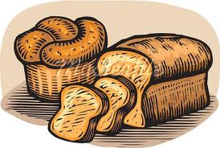

Бір үзім нан
Баяғы бір заманда бай мен кедей көрші өмір сүріпті. Олардың араздығы сондай, бірін-бірі көргісі келмейді екен. Байдың үйі кең, әдемі болыпты. Іші толған – алтын мен күміс. Ал кедейдің үйі ағаштан жасалған, төбесін бұтамен жапқан қора екен. Алтын мен күміс түгілі, нанын әзер тауып жепті. Егін егіп, оны суарып, күтіп, орып, өз күнін өзі көріпті.
Бір жылы көктемде алапат, су тасқыны болады. Бай алтынын көтеріп ағаштың басына шығып кетеді. Ал кедей болса, бір көмеш нанын қойнына салып, ол да ағаштың басына көтеріледі. Су тасқыны он бес күнге созылады. Бір күні қарны ашқан бай кедейге:
- Әй, кедей, сен мына бір кесек алтынды ал да, маған бір үзім нан бер, - дейді.
- Жоқ, алтының өзіңе, нан бере алмаймын, - деп жауап береді кедей.
Екінші күні бай кедейден тағы да нан сұрайды.
- Алтынымның жартысын берейін, - дейді ол бұл жолы.
- Жоқ, бере алмаймын, - деп бұл жолы да кедей келіспейді.
Ақыры, аштан өліп бара жатқан соң шыдамай, бай бір үзім нанға барлық алтынын айырбастайтынын айтады. Кедей бәрібір көнбейді. Бойынан күші кеткен бай басы айналып, суға құлап кетеді. Ал, келесі күні су тоқтап, кедей ағаштың басынан түседі. Халықтың: «Алтын, күміс - тас екен, арпа, бидай – ас екен» дейтіні осыған орай айтылған екен.
Әңгімелер тізіміне қайту